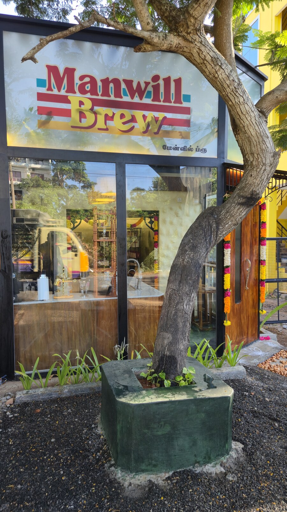
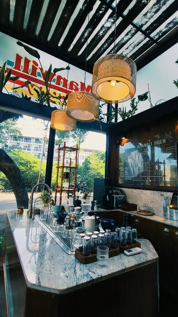

Coffee Ideas, Auroville
Roasting, Indian-origin coffee and classes bring learning into the experience. For Manwill, the useful question is how discovery can happen in a conversation at the counter.
A direction to explore with the team, grounded in the format of the bar and the identity already on the street.
The red-and-yellow sign already has presence. The compact counter makes the brewing visible. The proposal keeps that warmth and closeness, then carries it into a more consistent identity.
The addition of beans gives the brand a second setting: someone’s kitchen. The packaging and brew card extend the same personal approach beyond a visit to the bar.


Roasting, Indian-origin coffee and classes bring learning into the experience. For Manwill, the useful question is how discovery can happen in a conversation at the counter.
Manual brewing has a distinct role alongside espresso. Preparation can help define the experience of a place.
Brewing education is already part of specialty coffee. Manwill’s opportunity to explore is more personal: start with the words and preferences a guest already has.
The organic wordmark provides the character. Clear sans-serif type gives it room. Tomato red connects to the existing sign; cream, butter and olive give the photographs and packaging a shared palette.
Flash, close crops and grain make the images feel tactile. The copy invites a response: “What do you call strong?” is a question someone can answer without knowing coffee terminology.
The bean bag uses a stable printed identity with a label that can change for each coffee. The brew card is a proposed way to pass on a personal recipe.
What do guests actually ask for? How does the team guide them towards a coffee? Which beans are sold, in what sizes, and with what information?
Those answers should shape the final language, labels and launch pieces. The references provide context; they do not establish a market gap or replace conversations with the team.
Continue the conversationThe coffee-lettering photograph and original Manwill logotype were supplied by Raagul. The opening transition uses a white-background edit of the supplied coffee photograph and the unchanged vector artwork.
The campaign photography and physical packaging, shirt and tray mockups are generated concept images. They do not depict Manwill’s actual team or premises. The two shop photographs on this page are sourced separately above.
The 250 g bag is a proposed pack size. Coffee names, origin, roast information, final materials and required packaging information remain to be confirmed before production. Physical mockups illustrate the direction; the original vector is the source for final printed artwork.